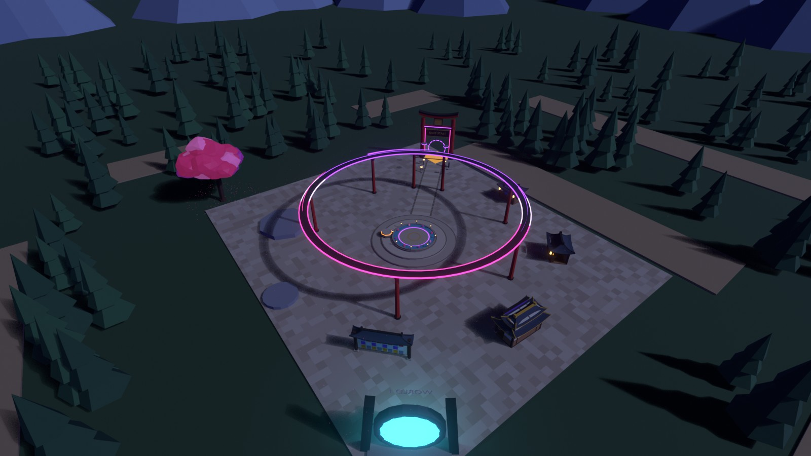
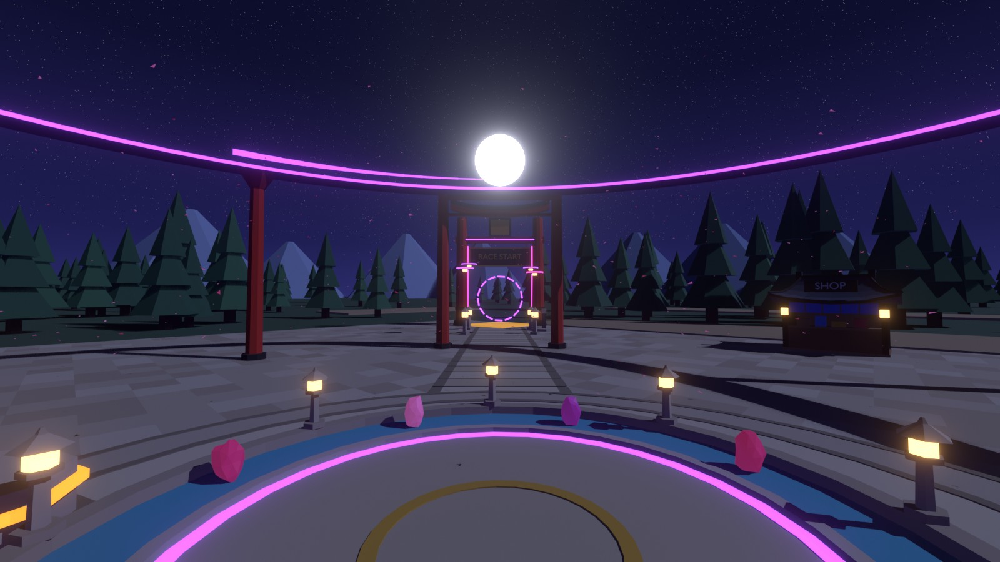
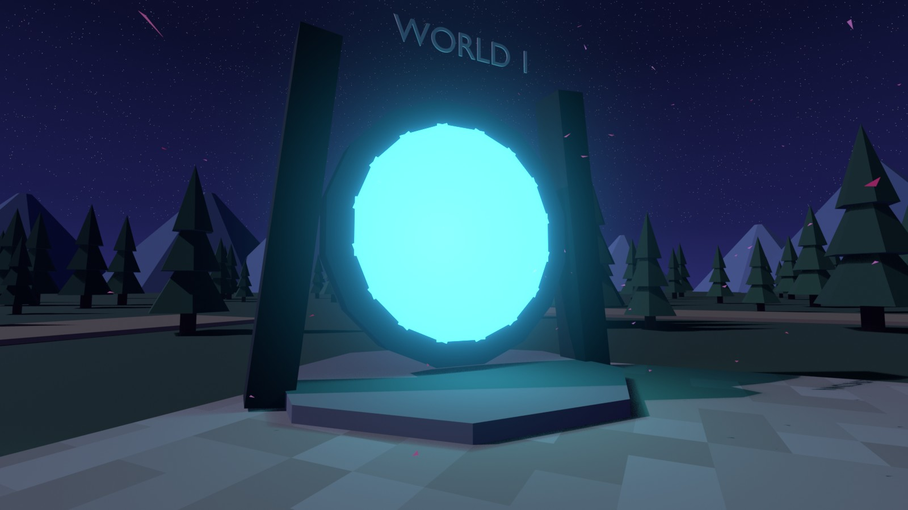
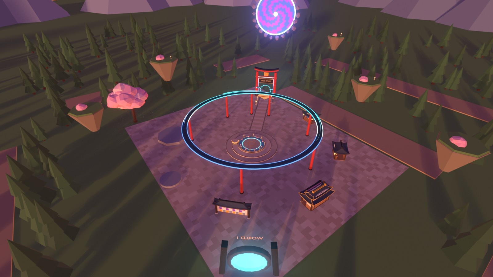
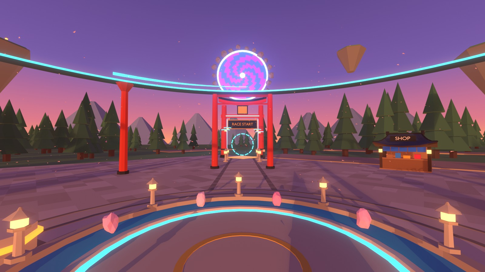
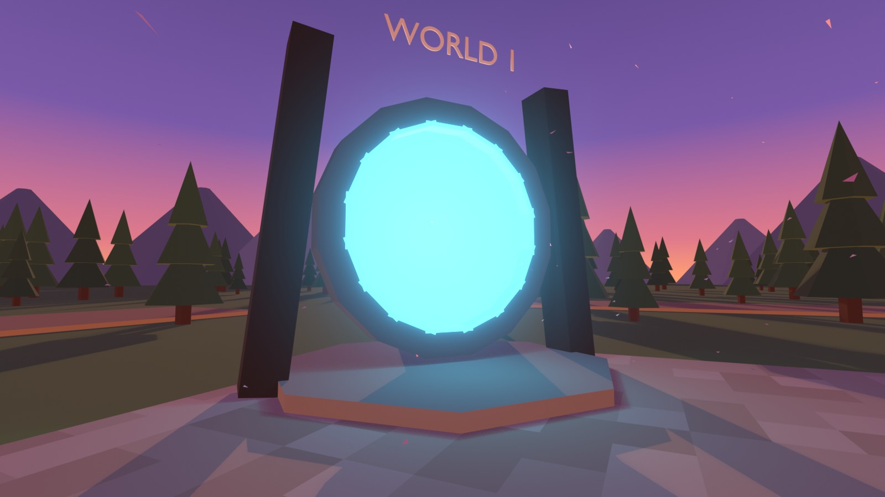
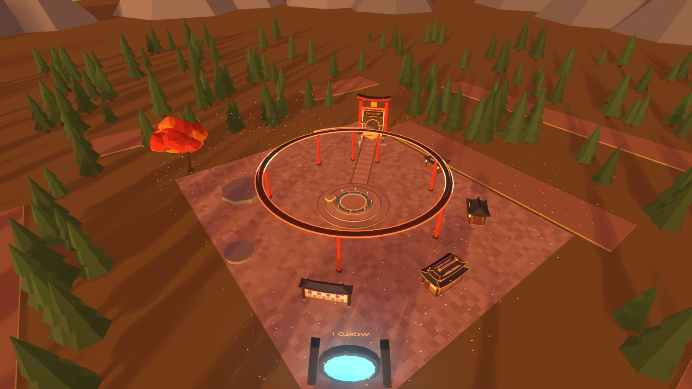
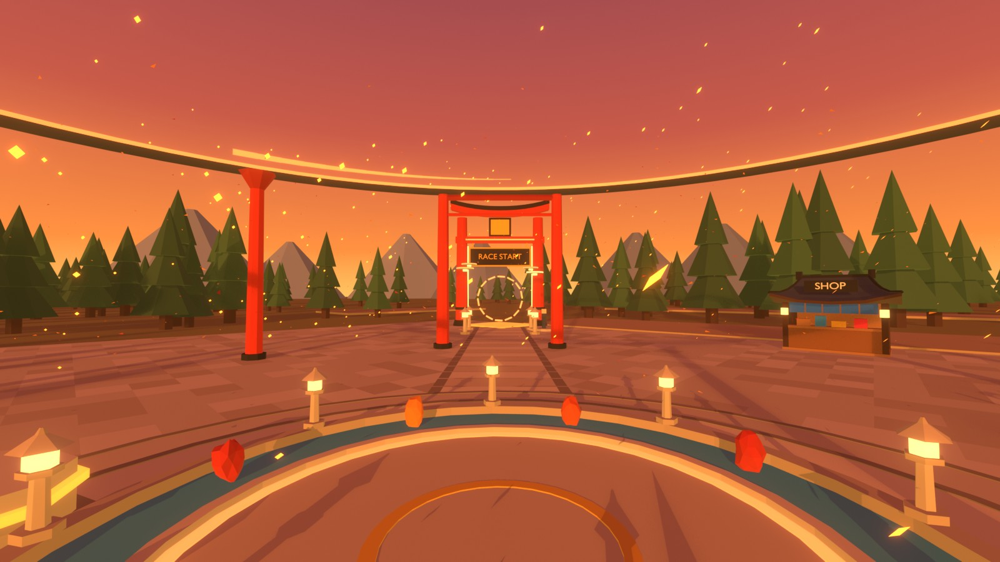
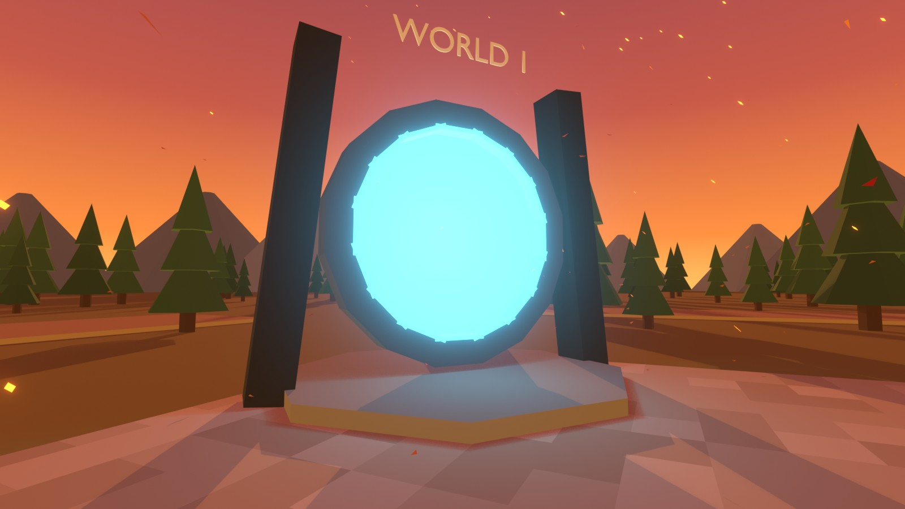

Same layout and footprint as World 1 (buildings, ring slots, spawn, torii, lanterns); only palette, sky, lighting and a few props change. Gate back to World 1 at hub-local (194, -176). Shots: overview, arrival from the spawn, return gate. Built by tools/blender/world2/plaza_w2.py. Reply with a letter, or what to change.
Night: indigo sky, stars, pale moon over the torii, crimson-violet glowing sakura, lit lanterns, violet/magenta accents.



Dusk: a swirling blue-violet rift beyond the torii, floating rock islands round the plaza, cyan accents.



Autumn dusk: orange sky, the Great Sakura as a red maple, falling leaves and floating embers, copper accents.


